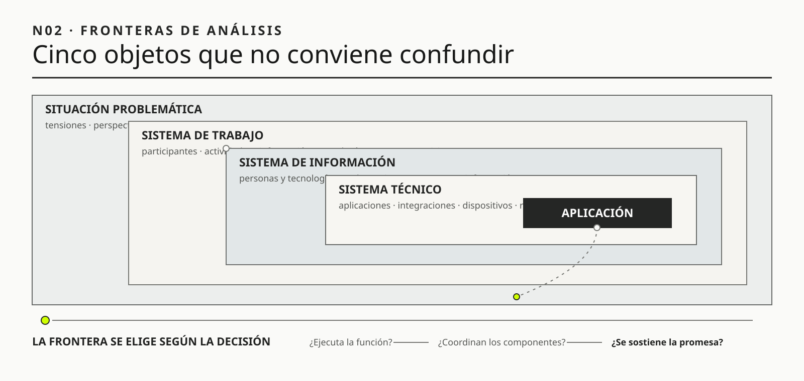

01
01Steven Alter
OBRA PRINCIPAL UTILIZADA“The Work System Method for Understanding Information Systems and Information System Research”Communications of the AIS, 2002

Un sistema de información organizacional no es un programa ni una suma de aplicaciones.
El sistema de información no cabe en una aplicación
Ruta de lectura: problema, distinciones, decisiones, prueba, transferencia y preparación para N03.

Nota. SIN NUM. identifica los aparatos de orientación y referencia que no integran la secuencia argumental.
Seis voces principales para ampliar, contrastar y discutir esta lectura.
01Communications of the AIS, 2002
 02
02Wiley, 2007 · con John Poulter
 03
03IRM Press, 2003
 04
04Human Relations, 1951 · con K. W. Bamforth
 05
05Interacting with Computers, 2011 · con G. Baxter
 06
06NIST AI 100-1, 2023
N02 no resume estas fuentes ni las convierte en una receta. Las pone en tensión para construir juicio profesional.
¿Qué queda invisible y qué decisiones se vuelven peligrosas cuando identificamos el sistema de información con el software que aparece en una pantalla?

Una pantalla puede decir la verdad sobre una parte y llevarnos a una conclusión falsa sobre el conjunto.
Imaginemos un aeropuerto. Una pasajera llega a destino y su valija no aparece. Abre la aplicación: “Equipaje embarcado”. El código fue leído antes de cerrar el vuelo; rampa recuerda haberla colocado en el carro correcto. La cinta funcionó, el avión salió en horario y los tableros muestran verde. Sin embargo, la valija quedó junto a una puerta porque el carro cambió de posición durante una tormenta.
La pasajera se llama Martina. Viajó para presentar un trabajo al día siguiente y en la valija llevaba la ropa que pensaba usar, un adaptador que no consiguió en Buenos Aires y una carpeta con documentos originales. Durante unos minutos espera frente a la cinta porque todo lo que ve le indica que debe seguir esperando. En la pantalla del aeropuerto, su vuelo figura como finalizado. En la aplicación de la aerolínea, el equipaje aparece embarcado. En el comprobante pegado a su pasaporte, el destino es correcto. Cada señal parece tranquilizadora por separado. Juntas producen una instrucción equivocada: no haga nada todavía.
Cuando la cinta se detiene, Martina va al mostrador. La empleada consulta otra pantalla y encuentra el mismo estado. “Figura embarcada”, responde. La frase es técnicamente prudente: describe el dato disponible. Para Martina, sin embargo, suena como una negación de lo que tiene delante. Ella no está discutiendo la lectura del código de barras; está diciendo que la valija no llegó. Las dos hablan de objetos diferentes sin saberlo. La empleada habla de un evento registrado. Martina habla de un resultado de servicio.
La primera reacción de la organización es buscar una falla visible. Tal vez la etiqueta se desprendió. Tal vez el lector no sincronizó. Tal vez alguien retiró la valija por error. Son hipótesis posibles, pero todavía no explican por qué todos los componentes conocidos muestran un recorrido normal. La empleada llama a rampa. Allí recuerdan una secuencia que no figura en los registros: durante la tormenta se cerró una posición y dos carros cambiaron de lugar. Uno llegó al avión; el otro quedó bajo una manga distinta. La etiqueta fue leída antes del cambio. El dato no era falso. Había quedado viejo respecto del mundo físico.
El episodio parece sencillo cuando se lo reconstruye después. En el momento, nadie poseía la historia completa. El lector conocía una etiqueta. El sistema de equipajes conocía un evento. Rampa conocía un cambio de posición. Operaciones conocía la tormenta. La tripulación conocía la hora de cierre. La pasajera conocía la ausencia. Cada parte tenía información relevante, pero ninguna podía producir por sí sola la explicación. La explicación emergió de relacionar fragmentos que pertenecían a tareas, tiempos y responsabilidades diferentes.
Ahora imaginemos que la aerolínea responde encargando una aplicación nueva. La interfaz podría ser más clara, mostrar un mapa y enviar notificaciones elegantes. Incluso podría reemplazar “equipaje embarcado” por “último registro: puerta 18, 16:42”. Eso mejoraría la precisión de la comunicación. Pero, si los cambios de carro continúan sin producir un evento nuevo, la pantalla seguirá representando con gran calidad una historia incompleta. La mejora de software será real y, al mismo tiempo, insuficiente para la promesa que Martina creyó recibir.
La empleada hace entonces algo que ningún menú le propone. Pregunta qué vuelos salen esa noche, llama a la posición donde quedó el carro, confirma que la valija tiene la etiqueta correcta y acuerda un traslado al hotel. También le explica a Martina qué sabe, qué todavía no sabe y a qué hora volverá a comunicarse. Es una intervención pequeña, pero transforma la situación. Convierte fragmentos dispersos en una coordinación, define una responsabilidad y crea una posibilidad de reparación. El servicio no se recupera porque una base de datos cambió de estado; se recupera porque personas y tecnologías lograron sostener una nueva promesa verificable.
A las 23:18 la valija llega al hotel. La aplicación todavía dice “equipaje embarcado”. Para el sistema técnico, el último evento no cambió. Para Martina, el servicio finalmente terminó. ¿Dónde estuvo, entonces, el sistema? No solamente en la aplicación, ni en el lector, ni en la cinta, ni en rampa, ni en la conversación. Estuvo en la configuración completa que debía hacer que una pertenencia identificada acompañara a una persona y, cuando eso fallara, pudiera ser localizada, explicada y devuelta.
Esta es la idea central de N02: una pantalla puede decir la verdad sobre una parte y llevarnos a una conclusión falsa sobre el conjunto. El sistema relevante no es aquello que podemos señalar con el dedo. Es la red de trabajo que hace posible (o imposible) sostener una promesa.
A las 13:06 una huésped llega a Hotel Horizonte. Tiene un correo de confirmación, un código de reserva y una autorización de tarjeta vigente. Recepción encuentra la reserva en el PMS, pero la habitación asignada figura “ocupada”. Housekeeping sostiene que fue limpiada y liberada a las 12:42; muestra una planilla compartida en la que aparece en verde. El canal de venta había ofrecido check-in temprano. Mantenimiento, consultado por teléfono, recuerda que la cerradura fue intervenida esa mañana, aunque la orden ya está cerrada. La supervisora decide entregar otra habitación, registra una nota y pide a Reservas que impida una nueva venta de la original.
Podríamos describir lo ocurrido como un problema del PMS. Esa explicación tiene una ventaja: señala un objeto reconocible, un proveedor y una posible inversión. También tiene una debilidad decisiva: no explica cómo pudo existir simultáneamente una reserva válida, una habitación físicamente preparada, un estado informático incompatible, una promesa comercial y una decisión de reparación. Tampoco explica por qué el servicio finalmente funcionó (la huésped recibió alojamiento) gracias a conversaciones, conocimiento local y autoridad informal que no estaban representados en la aplicación.
La pregunta metodológica no es todavía si el PMS debe reemplazarse. Es cuál es el sistema que produjo la promesa, la contradicción y la reparación. Si elegimos mal esa unidad de análisis, podemos mejorar una parte y deteriorar el resultado que importa.
Un sistema de información organizacional no es un programa ni una suma de aplicaciones. Es una configuración de trabajo mediante la cual personas y tecnologías producen e interpretan información, aplican reglas, coordinan acciones y entregan productos o servicios a alguien. Sus resultados dependen de relaciones entre participantes, información, tecnologías, procesos, autoridad, infraestructura y entorno. Por eso una aplicación puede funcionar según su especificación mientras el sistema completo incumple su propósito.
Esta tesis tiene una consecuencia práctica: antes de definir requisitos o seleccionar una solución, el profesional debe construir una representación provisional del sistema de trabajo relevante. Esa representación no intenta incluir toda la organización. Debe ser lo bastante amplia para explicar el resultado y lo bastante acotada para sostener una decisión. Su frontera se justifica mediante una pregunta y una promesa de servicio, no mediante el organigrama ni el inventario tecnológico.

HH-01, construido en N01, dejó un memo metodológico con un pedido, un propósito, incertidumbres, evidencia inicial, una acción autorizada y una decisión todavía no autorizada. El memo no afirmó que el PMS causara las sobreventas. Autorizó reconstruir episodios de reserva y llegada para distinguir problemas de aplicación, información, coordinación y promesa. N02 recibe esa pregunta y cambia la unidad de análisis.
HH-02 es el mapa provisional del sistema de trabajo que produce una promesa de alojamiento. Parte de un episodio, no del inventario tecnológico. Registra participantes, información, tecnologías, actividades, terceros, tiempos, autoridad, resultado y reparación. Cada relación se expresa con un verbo porque una lista de componentes no permite explicar cómo una reserva confirmada llega a convertirse, o no, en una habitación adecuada.
El pasaje entre ambos artefactos conserva una restricción importante. HH-01 autorizó investigar y mantuvo fuera de alcance la selección de plataforma. HH-02 puede ampliar o reducir la frontera, pero no convertir esa exploración en una aprobación silenciosa. Su resultado debe mostrar qué relaciones pueden explicar la contradicción, qué evidencia permitiría distinguirlas y qué parte del sistema necesita seguirse en N03 para detectar efectos desplazados.
En Ingeniería de Software aprendimos a describir procesos, formular requisitos, verificar comportamientos y administrar riesgos. El modelo curricular IS2020 de ACM y AIS ubica esas capacidades dentro de una formación que también exige comprender el contexto organizacional de los sistemas de información. Todo eso sigue siendo necesario. Si el PMS debe aceptar una modificación de reserva, necesitamos saber qué entrada recibe, qué reglas aplica, qué estado cambia y cómo comprobaremos el resultado. METSI no reemplaza ese trabajo: cambia la pregunta que viene antes.
Un requisito puede estar perfectamente escrito y pertenecer al sistema equivocado. “Cuando Housekeeping marque una habitación como liberada, el PMS deberá volverla disponible” parece preciso. Sin embargo, todavía mezcla al menos tres hechos: terminar una limpieza, habilitar físicamente una habitación y autorizar su asignación. Si además Mantenimiento puede bloquearla o Comercial prometió check-in temprano, automatizar el requisito sin reconstruir esos significados puede volver más rápida una decisión incorrecta.
La diferencia puede expresarse de manera simple. Ingeniería de Software ayuda a construir correctamente una solución. METSI obliga a justificar qué situación intentamos transformar, qué sistema produce hoy el resultado y por qué esa solución debería intervenir el mecanismo relevante. La primera disciplina aporta rigor de construcción; la segunda agrega rigor de encuadre e intervención. En la práctica profesional se necesitan juntas.

La palabra sistema resulta cómoda porque permite conversar sin detenerse a precisar la unidad de análisis. Esa comodidad se vuelve peligrosa cuando llega el momento de atribuir una causa, diseñar una prueba o asignar responsabilidad. En una misma reunión, “el sistema” puede significar la pantalla que usa Recepción, el conjunto de aplicaciones conectadas, la información que circula, el trabajo que produce alojamiento o la situación problemática completa. Las cinco expresiones están relacionadas, pero no son intercambiables.
| Unidad | Qué incluye | Pregunta característica | Riesgo de confundirla con el conjunto |
|---|---|---|---|
| Aplicación | Código, interfaz, reglas implementadas y datos administrados por un producto. | ¿La función ejecuta correctamente lo especificado? | Convertir una respuesta técnica local en evidencia sobre el servicio completo. |
| Sistema técnico | Aplicaciones, integraciones, dispositivos, redes e infraestructura que cooperan. | ¿Los componentes intercambian estados de manera segura y oportuna? | Suponer que una integración correcta resuelve diferencias de significado o autoridad. |
| Sistema de información | Personas y tecnologías que producen, interpretan, comunican y utilizan información para coordinar decisiones. | ¿Qué afirmaciones pueden sostenerse y quién puede actuar con ellas? | Reducir información a datos almacenados e ignorar interpretación, oportunidad y responsabilidad. |
| Sistema de trabajo | Participantes, actividades, información, tecnología y recursos que producen un producto o servicio para alguien. | ¿Cómo se genera efectivamente la capacidad o promesa que importa? | Dibujar únicamente el procedimiento formal y excluir adaptación, excepción y reparación. |
| Situación problemática | Conjunto abierto de tensiones, perspectivas, restricciones e historias desde el cual construimos uno o más sistemas relevantes. | ¿Qué formas distintas existen de comprender e intervenir lo que ocurre? | Tratar el primer encuadre como si fuera una descripción neutral y definitiva. |
Estas unidades no forman una escalera en la que la más grande siempre sea mejor. Son lentes anidados que responden preguntas diferentes. Para diagnosticar una consulta lenta puede bastar la aplicación o el sistema técnico. Para decidir si Hotel Horizonte debe reemplazar el PMS, la unidad necesaria probablemente abarque el sistema de información y el sistema de trabajo: contratos, estados de habitación, trabajo informal, autoridad, canales y capacidad de reparación. Para discutir por qué Dirección, Recepción y Comercial consideran distintos los problemas prioritarios, quizá sea necesario volver a la situación problemática y construir más de un sistema relevante.
La precisión aparece cuando el equipo puede completar una frase: “Para responder esta pregunta trataremos como sistema de interés a…, porque necesitamos decidir…”. Esa declaración evita dos errores simétricos. El primero es reducir la unidad hasta que coincida con la solución preferida. El segundo es expandirla hasta incluir toda la organización y perder posibilidad de actuar. La frontera no se justifica por tamaño, sino por su capacidad de conservar las relaciones que podrían cambiar la explicación o la decisión.
Cuando una organización dice “el sistema”, suele señalar aquello que tiene nombre comercial, contrato y pantalla: el PMS, el ERP, la aplicación móvil. Es comprensible. El software concentra funciones visibles, contiene datos y condiciona gran parte de la actividad. El problema aparece cuando esa conveniencia lingüística se convierte en teoría causal.
Si definimos el sistema como el PMS, la escena inicial se reduce a una inconsistencia entre un registro y la realidad. Las soluciones plausibles serán corregir el registro, integrar la planilla o reemplazar el producto. Pero todavía no sabemos qué significa “liberada”, quién tiene autoridad para declarar ese estado, qué evento lo produce, cuánto demora en propagarse, qué excepciones existen ni quién responde cuando la promesa comercial antecede a la capacidad operacional.
El software tampoco contiene por sí solo el propósito. Una base puede almacenar reservas sin que exista una capacidad confiable de alojar. Una interfaz puede completar un check-in sin que la habitación sea adecuada. Una API puede devolver 200 OK aunque un evento posterior no actualice el inventario de todos los canales. Confundir ejecución técnica con resultado organizacional equivale a evaluar una orquesta comprobando que cada instrumento emite sonido.
Ejemplo breve: inscripción universitaria. El sistema acepta una inscripción y genera comprobante. Días después se descubre que la materia no reconoce una correlativa recién aprobada. La transacción funcionó; la capacidad de inscribir correctamente falló porque dependía de reglas académicas, actualización de actas, equivalencias y posibilidad de reclamar. “Comprobante emitido” no equivale a “vacante válida”.
Steven Alter propuso analizar los sistemas de información dentro del sistema de trabajo al que sirven. En su formulación, un sistema de trabajo es aquel en el que participantes y máquinas realizan procesos y actividades usando información, tecnología y otros recursos para producir productos o servicios para clientes internos o externos. Esta perspectiva cambia la pregunta. En lugar de comenzar por “¿qué funciones debe tener el nuevo PMS?”, invita a preguntar “¿cómo se produce hoy una reserva confiable y qué papel cumple el PMS dentro de esa capacidad?”.
En Learning for Action, Peter Checkland y John Poulter llegan a una advertencia compatible desde otra tradición. Un sistema humano no es simplemente una cosa objetiva cuyos límites todos reconocerán del mismo modo. Es también una forma de organizar una indagación sobre una situación problemática. Comercial, Recepción, Finanzas y la huésped pueden construir sistemas relevantes diferentes porque atribuyen propósitos distintos a la misma actividad. La representación no es arbitraria, pero siempre depende de una pregunta, una perspectiva y criterios de pertinencia.
La tradición socio-técnica agrega una tercera exigencia. Desde los estudios de Trist y Bamforth hasta el trabajo de Enid Mumford, el desempeño no se explica optimizando por separado una solución técnica y una organización social. Clegg (2000), y Baxter y Sommerville (2011), trasladan esa exigencia al diseño y la ingeniería de sistemas. La tecnología reorganiza autonomía, comunicación, control, conocimiento y calidad del trabajo; las prácticas sociales, a su vez, modifican el funcionamiento efectivo de la tecnología. Diseñar una parte sin la otra produce con frecuencia un sistema técnicamente correcto y operacionalmente frágil.
La literatura reciente no reemplaza esas raíces; muestra por qué siguen siendo necesarias. Una revisión sistemática de Polojärvi (2023) encontró que “sistema socio-técnico” se usa con sentidos diferentes y que una definición superficial (“personas más tecnología”) no alcanza para explicar relaciones. Alter (2024) dio un paso adicional: en sistemas crecientemente automatizados, hablar de “uso” como una persona operando una interfaz resulta insuficiente. El usuario de una capacidad puede ser un sistema de trabajo completo que delega funciones y responsabilidades a dispositivos o agentes. Esta actualización importa porque obliga a mapear quién o qué realiza trabajo, no solamente quién toca la pantalla.
Estas tres perspectivas no son idénticas. Alter ofrece un marco descriptivo relativamente concreto para analizar trabajo; Checkland subraya que la selección del sistema depende de la situación y del observador; la tradición socio-técnica introduce la interdependencia entre diseño técnico, organización del trabajo y participación. METSI las utiliza de forma complementaria: necesitamos un mapa suficientemente concreto para intervenir, pero debemos tratarlo como una hipótesis revisable y preguntar quién participó en su construcción.
La distinción no exige ampliar siempre el análisis. Existen problemas cuya causa dominante sí está contenida en un componente: una consulta sin índice, una pérdida de memoria o un certificado vencido pueden diagnosticarse y corregirse técnicamente. El criterio es explicativo, no ideológico. Si la frontera técnica permite reconstruir el episodio, predecir la falla y corregirla sin trasladar consecuencias relevantes, agregar actores y procesos sería costo sin beneficio. La mirada socio-técnica se vuelve necesaria cuando el resultado depende de significados, decisiones, coordinación o condiciones que el componente no controla. Saber reducir la frontera es tan profesional como saber ampliarla.
Supongamos que un equipo enumera: huésped, Recepción, PMS, OTA, Housekeeping, planilla, Finanzas y pasarela de pagos. La lista es útil, pero todavía no constituye una explicación sistémica. Saber qué elementos existen no muestra cómo una promesa válida se transforma en una habitación asignable ni por qué puede fallar.
Para pasar del inventario al sistema necesitamos relaciones expresadas con verbos. La OTA ofrece una condición; el PMS acepta una reserva; una regla comercial protege cierto inventario; Housekeeping declara una habitación limpia; Mantenimiento inhabilita una cerradura; Recepción interpreta estados y asigna; una supervisora autoriza una excepción; Finanzas concilia una captura; el hotel repara una promesa incumplida. Los verbos revelan dependencia, temporalidad y autoridad.
También debemos distinguir al menos seis clases de elementos:
Las reglas y la autoridad atraviesan esas clases. A veces están codificadas; otras se expresan en políticas, contratos, supervisión o costumbre. Una pantalla puede permitir una acción que la organización no autoriza, o impedir una acción que una persona necesita realizar para evitar daño. Por eso “lo que permite el sistema” puede referirse a capacidad técnica, permiso organizacional o conducta habitual: tres cosas diferentes.
Ejemplo breve: supermercado. Una caja permite aplicar un descuento, pero la política exige autorización cuando supera cierto monto. La cajera conoce que un alimento llegará vencido a la próxima semana y decide liquidarlo; la supervisora aprueba verbalmente. El botón describe capacidad técnica, no autoridad. Si el mapa contiene solo caja, precio y stock, no explica por qué el descuento fue legítimo ni cómo debería auditarse.
Ningún análisis puede incluir todo. La frontera establece qué elementos y relaciones trataremos como parte del sistema y cuáles como entorno. El criterio no es dibujar el universo, sino conservar aquello que puede explicar el resultado y ser relevante para la decisión.
Si la pregunta es por qué una pantalla responde lentamente, el sistema puede incluir cliente, red, servicios, base de datos e infraestructura. Si la pregunta es por qué la huésped espera aun con una reserva confirmada, esa frontera resulta demasiado estrecha. Habrá que incluir estados de habitación, reglas de inventario, coordinación entre áreas, promesas de canal, excepciones y autoridad de reparación. Si la pregunta es por qué aumenta la sobreventa, quizá debamos agregar no-shows, cancelaciones, políticas de ocupación, tiempos de sincronización y contratos con terceros.
Una forma práctica de elegir frontera consiste en completar tres frases:
La frontera inicial es una hipótesis, no un compromiso permanente. Puede ampliarse si aparece un mecanismo externo relevante o reducirse si ciertos elementos no cambian ninguna explicación ni decisión. Pero toda revisión debe documentar su motivo. Ampliar porque “todo está conectado” destruye capacidad de acción; reducir para que coincida con una solución preferida produce un diagnóstico circular.
La norma ISO/IEC/IEEE 15288:2023 ofrece un recordatorio útil: los procesos de ciclo de vida pueden aplicarse al sistema de interés, a sus elementos y a sistemas de sistemas, desde la concepción hasta el retiro, con participación de actores relevantes. No decide por nosotros cuál es la frontera; obliga a declarar qué sistema estamos tratando. La metodología agrega el criterio situado: incluir aquello que puede modificar la explicación o la responsabilidad de la próxima decisión.
Ejemplo breve: transferencia bancaria. Para investigar por qué una pantalla demora, alcanza quizá con cliente, red y servicio. Para investigar por qué una persona perdió dinero después de una transferencia duplicada, la frontera necesita incluir reintentos, conciliación, banco receptor, alertas, atención y reparación. La misma aplicación pertenece a dos sistemas relevantes distintos porque las preguntas son distintas.
En Hotel Horizonte, una planilla compartida registra habitaciones liberadas antes de que el PMS refleje el cambio. Un grupo de mensajería permite consultar excepciones. Una supervisora recuerda restricciones y decide compensaciones. Desde una arquitectura oficial, estos elementos pueden parecer desviaciones. Desde el servicio real, participan en la capacidad de alojar.
Reconocerlos como parte del sistema no implica aprobarlos. Una práctica informal puede cumplir simultáneamente cuatro funciones:
Eliminar la planilla sin comprender su función puede empeorar el sistema. Formalizarla sin revisar por qué existe puede institucionalizar doble carga. Reemplazarla por una integración puede ser correcto si la nueva solución conserva visibilidad, oportunidad y capacidad de cuestionar. La decisión profesional no surge de clasificar “Excel malo / plataforma buena”, sino de reconstruir qué trabajo realiza, qué riesgo contiene y qué alternativa preserva la capacidad necesaria.
Mumford insistió en que las personas afectadas por un sistema deben participar en el diseño de su trabajo. La razón no es solamente lograr aceptación. Quienes realizan la actividad poseen conocimiento de excepciones, necesidades de información y consecuencias que raramente aparece en una especificación inicial. Sin esa participación, el equipo puede automatizar el procedimiento imaginado y eliminar las prácticas que hacían viable el trabajo real.
El conocimiento local, sin embargo, tampoco debe idealizarse. Una práctica puede proteger a un equipo y perjudicar a otro; puede funcionar gracias a una persona insustituible; puede eludir un control legítimo o excluir a quienes desconocen el canal informal. La observación socio-técnica requiere una pregunta doble: ¿qué capacidad preserva esta práctica y cómo distribuye acceso, carga, poder y riesgo?
Ejemplo breve: restaurante. La cocina usa una marca discreta en el papel para señalar alergias cuando la impresora de comandas falla. El recurso informal puede evitar daño, pero depende de que todos conozcan el código y puede excluir a personal nuevo. Digitalizarlo sin comprender su función es peligroso; conservarlo sin control también. El objeto de análisis es la capacidad de comunicar y confirmar una restricción crítica.

Decir que una propiedad es emergente no significa que sea misteriosa. Significa que no puede atribuirse de manera suficiente a un solo componente: aparece por la interacción entre ellos. La confiabilidad de una reserva, la seguridad, la accesibilidad o la resiliencia son propiedades de ese tipo.
El PMS puede registrar correctamente lo que recibió. La OTA puede publicar el cupo que le fue informado. Housekeeping puede liberar la habitación según su criterio. Recepción puede seguir el procedimiento. Sin embargo, el conjunto puede producir una contradicción si los criterios no significan lo mismo, los eventos llegan con demora o nadie posee autoridad para reconciliarlos. Cada parte cumple localmente y la promesa global falla.
Esto explica por qué una mejora local puede empeorar el sistema. Si Comercial aumenta la velocidad de venta sin reducir la demora de sincronización, crece la ventana de sobreventa. Si Recepción reduce el tiempo medio derivando casos complejos, el indicador mejora pero la huésped debe repetir su problema. Si un chatbot evita contactos simples y también oculta la vía de asistencia, disminuye el volumen visible mientras aumenta la dificultad de reparación.
El mecanismo puede adquirir forma circular. Una inconsistencia genera llamadas; las llamadas interrumpen el trabajo; las interrupciones demoran actualizaciones; la demora produce nuevas inconsistencias. La respuesta habitual, pedir que todos actualicen más rápido, actúa sobre una consecuencia y puede agregar presión al mismo ciclo. Otra intervención podría reducir ambigüedad de estados, automatizar un evento crítico o reservar capacidad para excepciones. Solo podremos compararlas si representamos la retroalimentación.
La emergencia tampoco elimina responsabilidad. Que muchas relaciones contribuyan a un resultado no significa que “nadie sea responsable”. Conviene separar cuatro preguntas:
Un proveedor puede causar una demora sin tener vínculo con la huésped. El hotel puede no controlar el código del proveedor y conservar, sin embargo, la responsabilidad de contingencia. Una recepcionista puede ejecutar una compensación sin ser responsable del diseño que la hizo necesaria. El mapa socio-técnico debe impedir dos simplificaciones: culpar al último actor visible y disolver toda obligación en “el sistema”.

Decir que una propiedad es emergente no significa que sea misteriosa.
Una consecuencia de pensar sistémicamente es desconfiar de las mejoras que solo pueden demostrar éxito dentro del componente intervenido. Una optimización local no es necesariamente incorrecta: reducir el tiempo de una consulta, automatizar una tarea repetitiva o aumentar la ocupación puede ser valioso. El problema aparece cuando el indicador mejora porque parte del costo se desplaza hacia otro actor, otro momento o una zona que no estamos midiendo.
Hotel Horizonte podría reducir el tiempo visible de check-in pidiendo que cada huésped complete información antes de llegar. Si el formulario no contempla acompañantes, accesibilidad o cambios de último momento, Recepción deberá corregir esos casos bajo presión. El tiempo promedio de la pantalla puede bajar mientras aumentan la espera de quienes necesitan asistencia, la exposición de datos y el trabajo de reparación. La mejora existe en una frontera y el deterioro aparece en otra.
Antes de aceptar una optimización conviene aplicar tres preguntas contrafácticas. Primero: si el componente mejora exactamente como esperamos, ¿qué resultado del servicio debería cambiar y mediante qué mecanismo? Segundo: ¿quién realizará el trabajo que la solución elimina, transforma o deja sin resolver? Tercero: ¿qué señal observaríamos si el costo hubiera sido desplazado en lugar de reducido? Estas preguntas conectan métricas locales con outcomes y obligan a incluir carga humana, excepciones y reparación.
El mismo criterio vale para IA. Un asistente puede disminuir el tiempo de redactar respuestas y aumentar simultáneamente el tiempo de verificar, corregir y explicar. Medir únicamente mensajes producidos atribuye el beneficio a la herramienta y vuelve invisible el trabajo que conserva la calidad. La unidad pertinente no es el modelo aislado, sino el sistema que formula, valida, autoriza, comunica y repara la respuesta.
En 2026 la frontera se vuelve todavía menos evidente. Un asistente de IA puede parecer una única función en la aplicación del hotel, pero su conducta depende de instrucciones, documentos recuperados, versión del modelo, proveedor, memoria, herramientas disponibles, permisos y personas que supervisan o reparan. Si consulta una reserva y redacta una respuesta, el riesgo es principalmente informativo. Si además invoca una herramienta que cancela, cobra o cambia una habitación, participa de una cadena de autoridad.
Por eso “incorporar un chatbot” no describe un componente de manera suficiente. Debemos preguntar qué trabajo absorbe, qué información interpreta, qué decisiones prepara, qué acciones ejecuta, con qué identidad, qué tercero procesa datos, quién observa sus errores y cómo se revierte una acción. El marco de gestión de riesgos de IA de NIST (Tabassi, 2023) y su perfil para inteligencia artificial generativa (Autio y colaboradores, 2024) insisten precisamente en tratar diseño, desarrollo, uso y evaluación como partes de un ciclo organizacional. DORA, al estudiar desarrollo asistido por IA en 2025, encontró que la IA actúa principalmente como amplificador: fortalece sistemas de trabajo sólidos y amplifica debilidades en sistemas frágiles. La conclusión metodológica no es estar a favor o en contra de la herramienta. Es no permitir que una interfaz vuelva invisible el sistema que la hace actuar.
Alter (2024) y Hofmann y colaboradores (2024) permiten precisar esta idea. A medida que agentes inteligentes reciben tareas, ya no basta con estudiar una relación individual entre persona y computadora. Aparecen interacciones multilaterales entre personas, agentes, áreas y organizaciones, junto con nuevas decisiones sobre delegación, autoridad y responsabilidad. Nguyen y Elbanna (2025), al revisar la colaboración humano‑IA en el trabajo, muestran que el resultado depende de ajuste organizacional, participación humana, datos y capacidad de adaptación. La tecnología puede producir una buena respuesta aislada y fracasar como miembro de un sistema de trabajo.
Un mapa actualizado puede representar al asistente como varias relaciones: recupera una política; el modelo propone una respuesta; una herramienta valida identidad y permiso; la aplicación solicita confirmación; una persona autoriza una excepción; el sistema registra y permite revertir. Esos verbos distinguen una ayuda conversacional de un agente con capacidad de cambiar estados. N31 y N32 profundizarán esa distinción; aquí alcanza con reconocer que la IA no reduce la necesidad de análisis socio-técnico: la aumenta.
La evidencia publicada durante 2025 y 2026 vuelve más concreta esta advertencia. DORA (2026) caracteriza a la IA como un amplificador del sistema organizacional existente: puede elevar el throughput y, a la vez, la inestabilidad; parte del tiempo ahorrado en creación reaparece como auditoría y verificación. NIST (2026), mientras revisa el AI RMF y desarrolla perfiles para capacidades habilitadas por IA en infraestructura crítica, conserva el foco en riesgos para personas, organizaciones y sociedad durante el ciclo de vida. Para METSI, la consecuencia es directa: adoptar una herramienta no constituye una intervención completa. Debemos explicar qué trabajo cambia, qué autoridad se delega, qué evidencia permitirá detectar deterioro y qué capacidad existe para detener o reparar.

Volvamos a la escena inicial y construyamos tres explicaciones rivales.
La habitación fue liberada a las 12:42 y el PMS no recibió o no procesó el evento. La evidencia relevante sería la secuencia de cambios, logs o registros de integración, versión de estado y tiempos. Si esta explicación se sostiene, una intervención técnica sobre eventos, sincronización o reconciliación puede ser central.
Housekeeping usa “liberada” para indicar limpieza terminada; Recepción necesita “asignable”, que además exige cerradura operativa y ausencia de una restricción. La planilla y el PMS pueden estar actualizados y, aun así, representar conceptos distintos. La evidencia necesaria incluye definiciones, reglas, casos de excepción y autoridad. Integrar más rápido datos semánticamente incompatibles aceleraría la contradicción.
La OTA ofrece check-in temprano bajo una regla que no contempla variabilidad operacional o vende una categoría cuya asignación se decide más tarde. La contradicción aparece antes del evento de limpieza. La evidencia debe reconstruir configuración del canal, contrato, ventanas, tasas de cumplimiento y decisiones comerciales. Cambiar el PMS puede no modificar la causa dominante.
| Hipótesis | Evidencia que la fortalecería | Evidencia que la debilitaría | Primera decisión razonable |
|---|---|---|---|
| Falla de propagación | El estado correcto aparece primero en Housekeeping y llega tarde o no llega al PMS. | Los registros muestran actualización oportuna y consistente. | Probar integración, idempotencia, monitoreo y reconciliación. |
| Incompatibilidad semántica | Áreas distintas usan “liberada”, “disponible” y “asignable” para condiciones diferentes. | Existe una definición común aplicada en episodios y sistemas. | Acordar estados, autoridad y reglas antes de acelerar el intercambio. |
| Promesa comercial desacoplada | La condición se ofrece sin evidencia de capacidad operacional para cumplirla. | La promesa respeta ventanas y restricciones reales, pero el estado se corrompe después. | Revisar política, contrato, cupos y condición de reparación. |
La tabla no reemplaza la investigación. Su función es impedir que toda evidencia sea interpretada a favor de una única solución. Cada fila anticipa qué observación podría cambiar el diagnóstico y qué decisión provisional sería proporcional antes de comprometer una sustitución completa.
Las tres explicaciones son compatibles con la misma escena visible. Incluso podrían coexistir. El propósito del mapa no es elegir una por intuición, sino mostrar qué relaciones deben observarse para distinguirlas. Un mapa útil obliga a escribir sobre sus conexiones preguntas como: “¿quién declara?”, “¿qué significa?”, “¿cuándo se propaga?”, “¿quién puede corregir?” y “¿qué promesa depende de ello?”.
La primera versión del mapa de Hotel Horizonte podría contener:
El mapa todavía no es una solución. Su valor se prueba si permite formular explicaciones rivales y localizar evidencia. Si solo reproduce aplicaciones y flechas de integración, ha vuelto a identificar sistema con arquitectura técnica. Si incluye todas las áreas sin mostrar relaciones, se convirtió en organigrama. Si dibuja un único camino feliz, oculta justamente el trabajo que debemos investigar.
No comenzar con “sistema de reservas”, porque ese nombre ya privilegia una solución. Usar una formulación orientada a resultado: “capacidad para prometer y entregar alojamiento bajo condiciones acordadas”. Identificar quién recibe el producto o servicio y quién asume consecuencias si falla.
Elegir un caso real desde la señal inicial hasta la resolución. Registrar participantes, decisiones, esperas, herramientas, información y reparaciones. El episodio impide que el mapa se apoye únicamente en procedimientos o entrevistas generales.
Mostrar quién promete, registra, interpreta, modifica, espera, autoriza, entrega y repara. Incorporar demoras y ventanas cuando cambian el comportamiento. Las flechas sin verbo suelen ocultar el mecanismo.
Preguntar qué ocurriría si desaparecieran planillas, llamadas, memoria local o tareas no reconocidas. Identificar también a quien recibe el resultado pero no participa en el diseño. Lo ausente puede ser más explicativo que un componente oficial.
Cada una debe señalar relaciones distintas y exigir evidencia diferente. Si el mapa solo sostiene la hipótesis inicial, funciona como ilustración persuasiva, no como instrumento de investigación.
Para cada elemento preguntar: ¿puede cambiar una explicación o una alternativa? ¿Su exclusión desplaza responsabilidad o daño? ¿Podemos tratarlo como entorno con una restricción explícita? Documentar por qué entra o queda afuera.
El resultado debe ser suficientemente estable para coordinar la investigación y suficientemente provisional para cambiar. No buscamos “el mapa verdadero” de Hotel Horizonte. Buscamos una representación defendible para la próxima decisión.
La tercera versión de HH-02 ya no presenta “el sistema de reservas” como un rectángulo único. Coloca en el centro la capacidad de prometer y entregar alojamiento bajo condiciones acordadas. A su alrededor vincula la oferta de Comercial, la reserva aceptada por el PMS, los estados producidos por Housekeeping y Mantenimiento, la interpretación de Recepción, la autorización de una excepción y la reparación ofrecida a la huésped. También marca como entorno relevante al canal de venta, la pasarela de pagos, el proveedor del PMS y el servicio de cerraduras.
El mapa conserva tres explicaciones rivales. Si domina la falla de propagación, deberían observarse estados correctos que llegan tarde o no llegan. Si domina la incompatibilidad semántica, pueden existir registros actualizados y decisiones contradictorias. Si domina la promesa comercial desacoplada, la contradicción nace antes del evento técnico y se concentra en condiciones vendidas sin evidencia de capacidad. Las tres pueden coexistir, pero exigen señales e intervenciones diferentes.
La decisión que HH-02 habilita es seguir durante dos semanas una muestra de episodios y revisar la frontera cuando aparezca una relación capaz de cambiar la explicación. No habilita reemplazar el PMS, integrar toda planilla ni automatizar la reparación. La condición de revisión queda escrita: si el análisis mejora un estado local pero la carga, el riesgo o la espera reaparecen en otro tramo, la frontera debe ampliarse. Esa condición entrega a N03 un mapa con consecuencias todavía abiertas, no una arquitectura declarada como verdadera.
La crítica al reduccionismo tecnológico puede conducir al error opuesto: todo se vuelve socio-técnico, político, histórico y cultural, por lo tanto nada puede delimitarse. Un mapa infinito no es más sistémico; es inutilizable.
La amplitud debe ser proporcional a la decisión. Para corregir una consulta lenta no hace falta reconstruir la estrategia comercial completa, salvo que el supuesto de carga dependa de ella. Para reemplazar el PMS sí puede ser necesario incluir contratos, migración, trabajo informal, integraciones y continuidad porque la intervención modifica esas relaciones.
Tampoco toda práctica social requiere codificación. Algunas conversaciones son deliberadamente flexibles; formalizarlas puede aumentar rigidez y vigilancia. Ni toda incompatibilidad debe eliminarse: áreas diferentes pueden necesitar vistas distintas mientras exista una traducción clara. La optimización conjunta no significa homogeneizar, sino diseñar relaciones que permitan a las partes cumplir el propósito sin trasladar costos de forma invisible.
Otra objeción señala que el lenguaje sistémico puede evitar decisiones: siempre habría una relación más que investigar. La respuesta es establecer suficiencia. El mapa es suficiente cuando representa los mecanismos rivales relevantes, identifica evidencia para distinguirlos y permite comparar intervenciones con consecuencias. La incertidumbre restante se registra; no se usa para fingir certeza ni para posponer indefinidamente.

Antes de aceptar un mapa socio-técnico, aplicar estas pruebas:
Si el mapa no cambia ninguna pregunta, evidencia o alternativa, su detalle es decorativo. Si únicamente concluye que debe reemplazarse la aplicación con la que comenzó el análisis, probablemente haya encerrado la solución dentro de la frontera.
Una institución decide reemplazar el software de administración de medicamentos después de varios errores. Si define el sistema como la aplicación, observará prescripción, validaciones, interfaz y registros. Esa frontera puede ser adecuada para ciertos defectos, pero no explica por sí sola cómo una orden llega de forma segura a una persona.
El sistema de trabajo incluye prescripción médica, validación farmacéutica, preparación, identificación, administración de enfermería, disponibilidad física, interrupciones, cambios de turno, bombas de infusión, etiquetado, comunicación con paciente y capacidad de detectar y reparar. Una alerta técnicamente correcta puede aumentar fatiga; una práctica de doble control puede reducir error y volverse ritual bajo presión; una nota informal puede conservar información crítica y violar confidencialidad.
Imaginemos que el nuevo sistema bloquea una dosis por interacción. El indicador muestra que el control funcionó. Sin embargo, la persona necesita una alternativa urgente, la farmacia no recibe contexto y enfermería debe llamar durante un cambio de turno. La seguridad no reside en el bloqueo aislado: emerge de detección, interpretación, autoridad, coordinación y reparación. Optimizar el número de alertas aceptadas podría empeorar la capacidad de tratar casos complejos.
La transferencia muestra también un límite de la analogía con el hotel. La severidad, regulación y especialización clínica exigen fronteras y evidencia más estrictas. No podemos copiar soluciones. Sí podemos transferir el criterio: definir la capacidad, reconstruir episodios, incluir trabajo real, distinguir significados, formular mecanismos rivales y asignar responsabilidad de reparación.
HH-02 queda completo cuando otra persona puede reconstruir la promesa, el episodio, los elementos relevantes, las relaciones con verbos, las tres explicaciones rivales, la evidencia que fortalecería o debilitaría cada una y la decisión que permanece fuera de alcance. Su propósito no es estabilizar una arquitectura, sino ofrecer una representación que pueda ser discutida y modificada sin perder trazabilidad.
N03 recibirá ese mapa para examinar algo que N02 sólo deja señalado: toda frontera permite ver ciertas relaciones y deja otras afuera; una mejora local puede volver mediante demoras, carga o riesgo desplazado. Por eso HH-02 incluye una frontera analítica y una condición explícita de revisión. No desarrolla todavía bucles de retroalimentación ni efectos de segundo y tercer orden. Entrega las relaciones y preguntas necesarias para que N03 pueda hacerlo sin volver a identificar el sistema con una aplicación.
El sistema de información no cabe en una aplicación porque la información adquiere significado y capacidad de acción dentro de un sistema de trabajo. Personas, tecnologías, reglas, procesos, terceros e infraestructura producen juntos una promesa; también producen sus contradicciones y reparaciones. El software es crucial, pero no contiene por sí solo el propósito, la autoridad ni el resultado.
Construir el sistema relevante es una decisión metodológica. La frontera debe seguir una capacidad y una pregunta; el mapa debe representar relaciones con verbos, tiempos y responsabilidades; las prácticas informales deben analizarse por la función que cumplen y el riesgo que crean; las propiedades emergentes deben explicarse mediante mecanismos, no mediante etiquetas.
En Hotel Horizonte, esta mirada impide saltar desde una reserva contradictoria hacia el reemplazo del PMS. Primero obliga a distinguir si domina una falla de propagación, una incompatibilidad semántica, una regla comercial o una combinación. La siguiente lectura llevará el problema un paso más lejos: toda frontera que vuelve visible un mecanismo deja otros afuera y puede desplazar carga, riesgo y responsabilidad.
Para el encuentro, traer respondidas por escrito dos de las seis preguntas. Señalar además cuál resulta más difícil de responder y por qué: ambas decisiones alimentan la puesta en común.